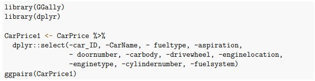
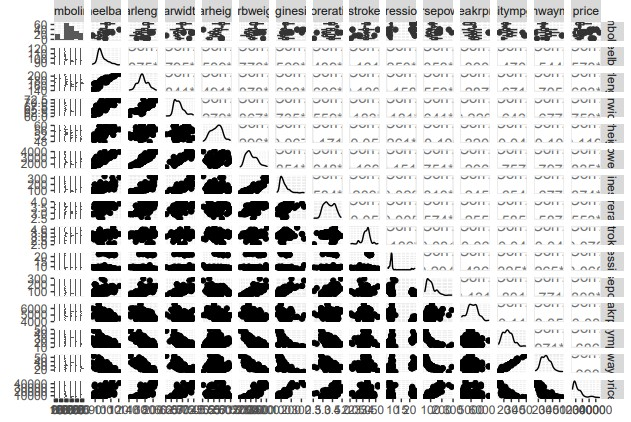

To prepare the dataset, the pairwise scatter plot was used to detect any multicollinearity
among the quantitative variables. Multicollinearity is a statistical concept where several independent variables in a model
are correlated. This becomes an issue because it leads to an unreliable regression model.

